ggplot
Geoms
Geoms, short for geometric objects, describe the type of plot you will produce. Read more
- 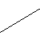
geom_abline
Line, specified by slope and intercept - 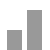
geom_bar
Bars, rectangles with bases on y-axis - 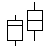
geom_boxplot
Box and whiskers plot - 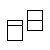
geom_crossbar
Hollow bar with middle indicated by horizontal line  geom_density_2d
geom_density_2d
Contours from a 2d density estimate-
geom_histogram
Histogram  geom_interval
geom_interval
Base for all interval (range) geoms- 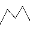
geom_line
Connect observations, in ordered by x value - 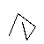
geom_path
Connect observations, in original order - 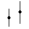
geom_pointrange
An interval represented by a vertical line, with a point in the middle - 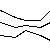
geom_quantile
Add quantile lines from a quantile regression - 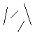
geom_segment
Single line segments  geom_text
geom_text
Textual annotations- 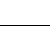
geom_vline
Line, vertical
-
geom_area
Area plots  geom_blank
geom_blank
Blank, draws nothing- 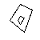
geom_contour
Display contours of a 2d surface in 3d - 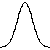
geom_density
Display a smooth density estimate - 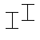
geom_errorbar
Error bars - 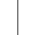
geom_hline
Line, horizontal - 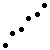
geom_jitter
Points, jittered to reduce overplotting - 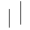
geom_linerange
An interval represented by a vertical line - 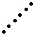
geom_point
Points, as for a scatterplot -
geom_polygon
A polygon -
geom_ribbon
Ribbons, y range with continuous x values - 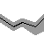
geom_smooth
Add a smoothed condition mean. - 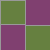
geom_tile
Tile plot as densely as possible, assuming that every tile is the same size.
Statistics
It's often useful to transform your data before plotting, and that's what statistical transformations do. Read more
-
stat_bin
Bin data  stat_contour
stat_contour
Contours of 3d data-
stat_density_2d
Density estimation, 2D -
stat_qq
Calculation for quantile-quantile plot -
stat_smooth
Add a smoother  stat_sum
stat_sum
Sum unique values. Useful for overplotting on scatterplots stat_unique
stat_unique
Remove duplicates
-
stat_boxplot
Calculate components of box and whisker plot -
stat_density
Density estimation, 1D - 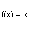
stat_identity
Identity statistic -
stat_quantile
Continuous quantiles  stat_sort
stat_sort
Sort in order of ascending x stat_summary
stat_summary
Summarise y values at every unique x
Scales
Scales control the mapping between data and aesthetics. Read more
 scale_area
scale_area
Size scale for continuous variable scale_continuous
scale_continuous
Continuous position scale scale_discrete
scale_discrete
Discrete position scale scale_gradient2
scale_gradient2
Colour gradient, with midpoint-
scale_linetype
Create a scale for categorical line types  scale_pow
scale_pow
Power scale scale_shape
scale_shape
Discrete position scale scale_size_discrete
scale_size_discrete
Size scale for discrete variables
 scale_brewer
scale_brewer
Colour brewer colour scales scale_date
scale_date
Continuous scale for date variables scale_gradient
scale_gradient
Continuous colour scale scale_hue
scale_hue
Colours that vary continuous in hue scale_manual
scale_manual
Manual scale, used when you want a direct mapping scale_prob
scale_prob
Probability scale scale_size
scale_size
Size scale for continuous variable
Coordinate systems
Coordinate systems adjust the mapping from coordinates to the 2d plane of the computer screen. Read more
- 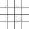
coord_cartesian
Cartesian coordinates - 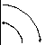
coord_flip
Flipped cartesian coordinates - 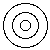
coord_polar
Polar coordinates
- 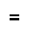
coord_equal
Equal scale cartesian coordinates  coord_map
coord_map
Map projections- 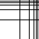
coord_trans
Transformed cartesian coordinate system
Facetting
Facets display subsets of the dataset in different panels. Read more
 facet_grid
facet_grid
Lay out panels in a rectangular/tabular manner.
Position adjustments
Position adjustments can be used to fine tune positioning of objects to achieve effects like dodging, jittering and stacking. Read more
-
position_dodge
Adjust position by 'dodging' overlaps to the side - 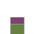
position_identity
Position adjust which does nothing - 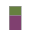
position_stack
Stack overlapping objects on top of one another
- 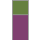
position_fill
Stack overlapping objects on top of one another, and standardise have equal height - 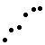
position_jitter
Jitter points to avoid overplotting